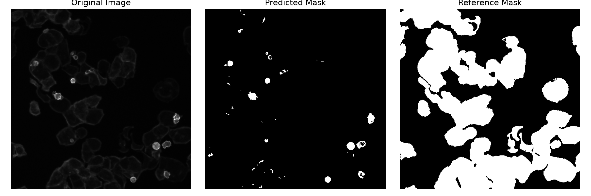

01Method
- Load 12 grayscale fluorescence images of human HT29 cells.
- Use channel 3, which highlights actin in the cell cytoplasm.
- Apply Otsu's method to separate brighter pixels from the background.
- Calculate coverage as the percentage of pixels classified as cells.
- Compare with the corresponding reference mask.
- Compute the absolute error per image and the mean absolute error across all 12.
- Visualise the image with the largest error.
Coverage (%) = cell pixels ÷ total pixels × 100
02Results
12images evaluated
19.7ppmean absolute error
40.5pplargest single error

03What went wrong
In the worst image, Otsu's method picks up only isolated bright regions and misses most of the dimmer cell bodies. It thresholds on brightness alone, so cells with low fluorescence fall below the cut-off and coverage is badly underestimated.
04Limitations
- Otsu relies on pixel brightness and struggles with low-intensity cells and dim boundaries.
- Coverage error compares total area, not whether individual pixels are classified correctly.
- Results describe the photographed fields of view only. They can't establish growth rates or coverage across a whole culture flask.
05Data & credits
Images and reference masks are from BBBC008v1 (Broad Bioimage Benchmark Collection), credited to David Root and Anne Carpenter, and licensed CC BY-NC-SA 3.0. References: Carpenter et al. (2006), Genome Biology; Ljosa et al. (2012), Nature Methods.